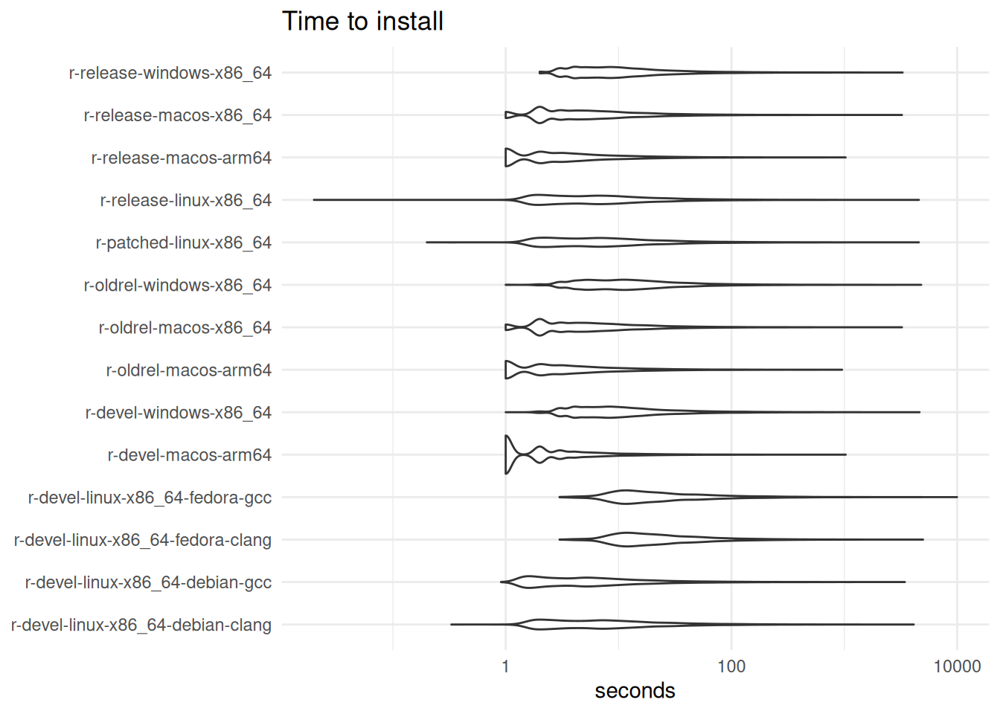
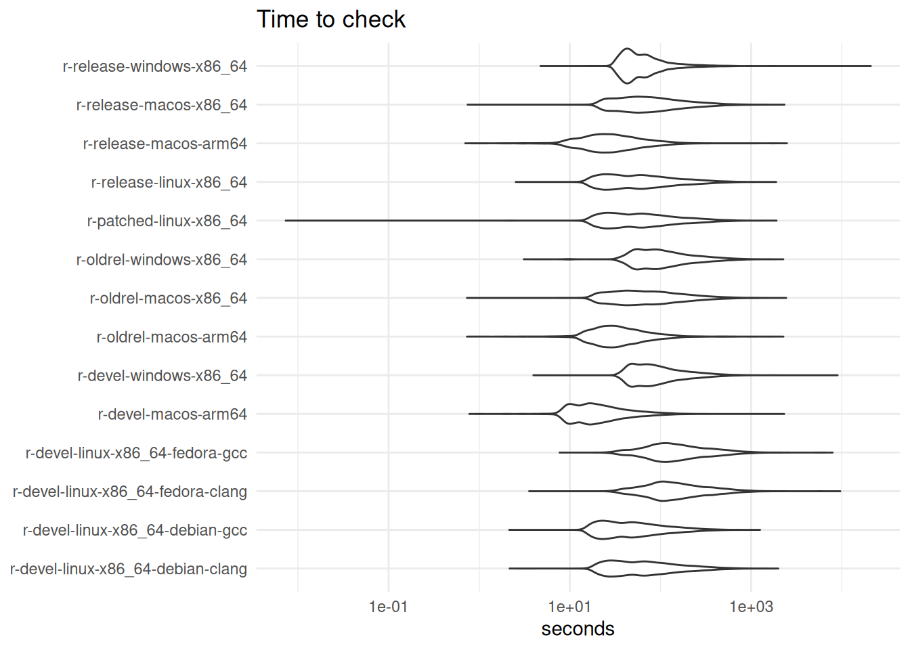
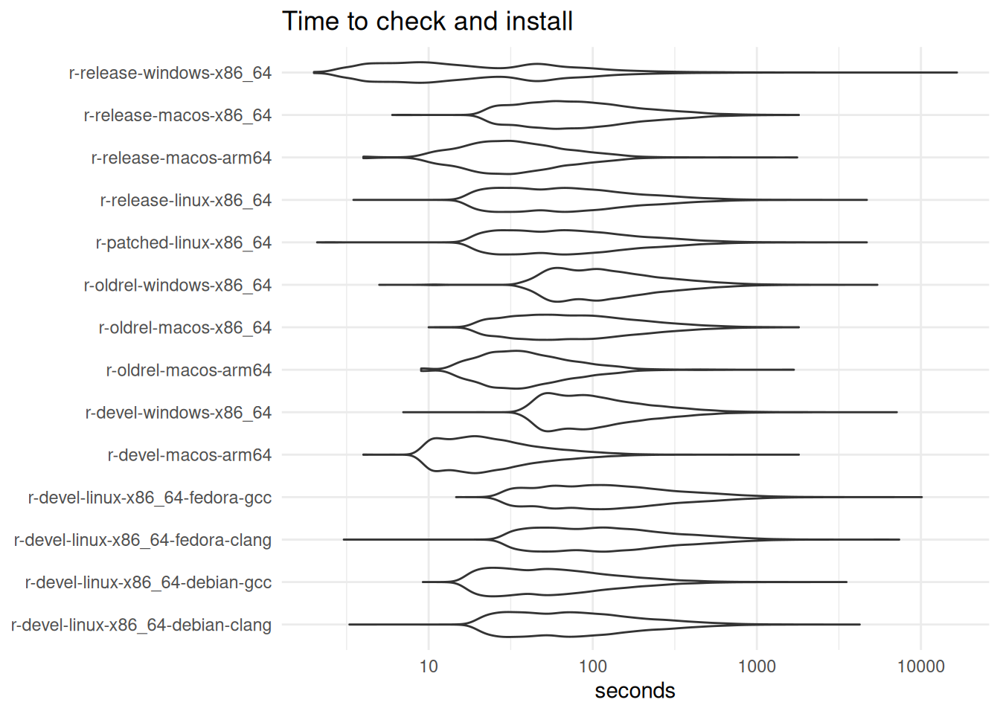
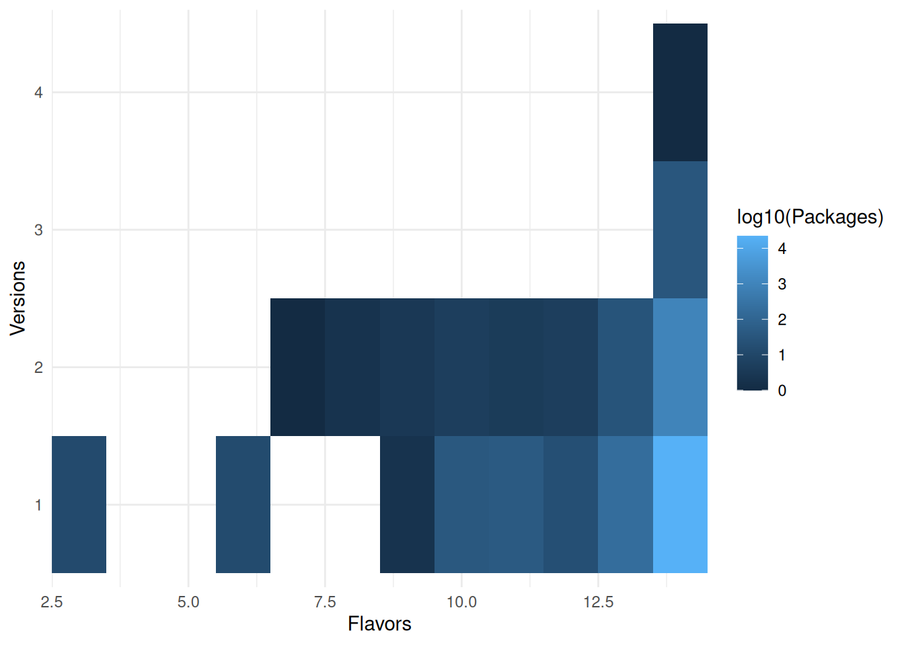
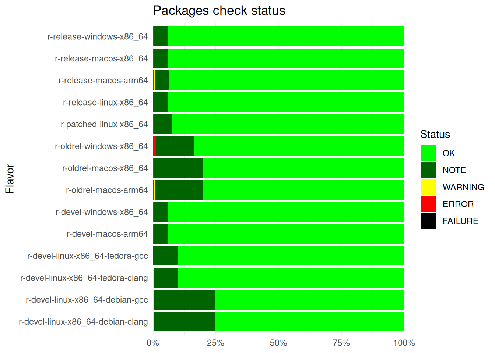

This report checks if the status of packages on CRAN are due to intermittent failures.
Failures defined as warnings, notes or errors without change on:
R version used (if not stable the same svn snapshot)
The package version (Note that CRAN might modify a package without changing the version)
Their dependencies
Reasons of these failures might be because the packages depend on:
Random generation numbers
Flacky external resources
Other ?
Why is this important?
Because package maintainers of dependencies of that package, R core and CRAN team need to check if the failures are false positives.
This report started because it was suggested as something that the R-repositories working group could help the CRAN team.
It makes use of tools::CRAN_check_results to retrieve the data.
library("dplyr")
library("tools", include.only = c("package_dependencies", "CRAN_check_results"))
library("flextable", include.only = c("flextable", "autofit"))
# Use a LOCAL environment to check if files can be overwritten on my computer
local_build <- as.logical(Sys.getenv("LOCAL", "FALSE"))
yc <- readRDS("today.RDS")
tc <- CRAN_check_results()
# Added 2023/03/09: sometimes some flavors are reported without status: Omit those
tc <- tc[!is.na(tc$Status),]
if (!interactive() && !local_build) {
message("Saving today's file.")
saveRDS(tc, file = "today.RDS")
} The checks are from multiple flavors release, devel, old release and patched on multiple machines and configurations.
old_flavors <- readRDS("flavors.RDS")
flavors <- unique(tc$Flavor)
# One flavor now present in all is the r-devel-windows-x86_64: skip
flavors <- setdiff(flavors, "r-devel-windows-x86_64")
proto <- data.frame(r_version = character(),
os = character(),
architecture = character(),
other = character())
flavors_df <- strcapture(
pattern = "r-([[:alnum:]]+)-([[:alnum:]]+)-([[:alnum:]_\\+]+)-?(.*)",
x = flavors,
proto = proto)
# Extract R version used and svn id
h <- "https://www.r-project.org/nosvn/R.check/%s/ggplot2-00check.html"
links <- sprintf(h, flavors)
extract_revision <- function(x) {
r <- readLines(x, 12)[12]
version <- strcapture(pattern = "([[:digit:]]\\.[[:digit:]]\\.[[:digit:]])",
x = r, proto = data.frame(version = character()))
revision <- strcapture(pattern = "(r[[:digit:]]+)", x = r,
proto = data.frame(revision = character()))
cbind(version, revision)
}
revision <- data.frame(version = character(),
revision = character())
for (i in links) {
revision <- rbind(revision, extract_revision(i))
}
flavors_df <- cbind(flavors = flavors, flavors_df, revision)
if (!interactive() && !local_build) {
saveRDS(flavors_df, "flavors.RDS")
}
m <- match(tc$Flavor, flavors_df$flavors)
tc_flavors <- cbind(tc, flavors_df[m, ])
flextable(flavors_df) |>
autofit()flavors | r_version | os | architecture | other | version | revision |
|---|---|---|---|---|---|---|
r-devel-linux-x86_64-debian-clang | devel | linux | x86_64 | debian-clang | r89873 | |
r-devel-linux-x86_64-debian-gcc | devel | linux | x86_64 | debian-gcc | r89874 | |
r-devel-linux-x86_64-fedora-clang | devel | linux | x86_64 | fedora-clang | r89852 | |
r-devel-linux-x86_64-fedora-gcc | devel | linux | x86_64 | fedora-gcc | r89795 | |
r-devel-macos-arm64 | devel | macos | arm64 | 4.6.0 | r89725 | |
r-patched-linux-x86_64 | patched | linux | x86_64 | 4.6.0 | r89797 | |
r-release-linux-x86_64 | release | linux | x86_64 | 4.5.3 | ||
r-release-macos-arm64 | release | macos | arm64 | 4.5.2 | ||
r-release-macos-x86_64 | release | macos | x86_64 | 4.5.1 | ||
r-release-windows-x86_64 | release | windows | x86_64 | 4.5.3 | ||
r-oldrel-macos-arm64 | oldrel | macos | arm64 | 4.4.3 | ||
r-oldrel-macos-x86_64 | oldrel | macos | x86_64 | 4.4.1 | ||
r-oldrel-windows-x86_64 | oldrel | windows | x86_64 | 4.4.3 | r89426 |
It assumes that the same configuration in one package is used for all. Or in other words that the reports of the configuration (svn revision and version) for the A3 package is the same as for all the other packages.
Warning: This assumption is not always true, but this would require to check each log file on each flavor to verify the R and svn id of each package (which could take too much time and resources).
Briefly an introduction of how much effort goes into checking
library("ggplot2")
theme_set(theme_minimal())
tc |>
filter(!is.na(T_install)) |>
ggplot() +
geom_violin(aes(T_install, Flavor)) +
scale_x_log10() +
labs(x = "seconds", title = "Time to install", y = element_blank())
Distribution of install time on each machine.
This means that just to install all the packages on the multiple flavors with a single CPU would take 68 days.
tc |>
filter(!is.na(T_check)) |>
ggplot() +
geom_violin(aes(T_check, Flavor), trim = FALSE) +
scale_x_log10() +
labs(x = "seconds", title = "Time to check", y = element_blank())
Distribution of checking time on each machine.
This means that to check all the packages on the multiple flavors with a single CPU would take 306 days.
tc |>
filter(!is.na(T_total)) |>
ggplot() +
geom_violin(aes(T_total, Flavor)) +
scale_x_log10() +
labs(x = "seconds", title = "Time to check and install", y = element_blank())
Distribution of total time on each machine.
This means that to install and check all the packages with a single CPU would take 388 days.
I don’t know the computational cost of 266 days of CPU (every day), but a rough calculation of 2.5 cents per hour means 232.68 dollars daily dedicated to this.
tc |>
group_by(Package) |>
summarize(Versions = n_distinct(Version)) |>
ungroup() |>
count(Versions, name = "Packages", sort = TRUE) |>
flextable() |>
autofit()Versions | Packages |
|---|---|
1 | 22,547 |
2 | 1,016 |
3 | 32 |
4 | 1 |
This was surprising, but sometimes checks have multiple versions. Probably when a new version is added and the system don’t catch it for a certain machine.
tc |>
group_by(Package) |>
summarize(Flavors = n_distinct(Flavor)) |>
ungroup() |>
count(Flavors, name = "Packages", sort = TRUE) |>
flextable() |>
autofit()Flavors | Packages |
|---|---|
14 | 23,229 |
13 | 218 |
11 | 48 |
10 | 42 |
12 | 24 |
6 | 14 |
3 | 13 |
9 | 5 |
8 | 2 |
7 | 1 |
Similarly, often packages are only tested on few configurations.
Combining both we can have packages with few configurations that have multiple versions being tested.
tc |>
group_by(Package) |>
summarize(Versions = as.character(n_distinct(Version)),
Flavors = n_distinct(Flavor)) |>
ungroup() |>
count(Flavors, Versions, name = "Packages") |>
ggplot() +
geom_tile(aes(Flavors, Versions, fill = log10(Packages))) +
scale_x_continuous(expand = expansion())
Most packages are just tested one version.
But focusing on those that have just one version of the package being tested, most of the machines have packages either OK or with some notes.
man_colors <- c("OK" = "green", "NOTE" = "darkgreen",
"WARNING" = "yellow", "ERROR" = "red", "FAILURE" = "black")
tc |>
group_by(Package) |>
filter(n_distinct(Version) == 1) |>
ungroup() |>
group_by(Flavor) |>
count(Status, name = "packages") |>
mutate(perc = packages/sum(packages),
Status = forcats::fct_relevel(Status, names(man_colors))) |>
ggplot() +
geom_col(aes(perc, Flavor, fill = Status)) +
scale_x_continuous(expand = expansion(), labels = scales::percent_format()) +
scale_fill_manual(values = man_colors) +
labs(title = "Packages check status", x = element_blank())
Most frequent status is OK or NOTE on all machines.
If we look at the most frequent status report for packages we can see this table:
ts <- tc |>
group_by(Package) |>
filter(n_distinct(Version) == 1) |>
count(Status, name = "flavors") |>
ungroup() |>
tidyr::pivot_wider(values_from = flavors, names_from = Status,
values_fill = 0) |>
count(OK, NOTE, WARNING, ERROR, FAILURE, name = "packages", sort = TRUE)
download.file("https://cran.r-project.org/web/packages/packages.rds",
destfile = "packages.RDS") # From the help page
ap <- readRDS("packages.RDS") |>
as.data.frame() |>
distinct(Package, .keep_all = TRUE)
ap_bioc <- available.packages(repos = BiocManager::repositories()[1:5])
ap_bioc <- cbind(ap_bioc, Additional_repositories = NA)
ap_colm <- intersect(colnames(ap), colnames(ap_bioc))
ap <- rbind(ap[, ap_colm], ap_bioc[, ap_colm])
head(ts) |>
flextable() |>
autofit()OK | NOTE | WARNING | ERROR | FAILURE | packages |
|---|---|---|---|---|---|
14 | 0 | 0 | 0 | 0 | 13,068 |
12 | 2 | 0 | 0 | 0 | 4,203 |
11 | 3 | 0 | 0 | 0 | 1,544 |
0 | 14 | 0 | 0 | 0 | 910 |
9 | 5 | 0 | 0 | 0 | 786 |
10 | 4 | 0 | 0 | 0 | 330 |
We can see that the most common occurrences are some sort of OK and notes on checks. We can also check the official results on CRAN.
We can see that 0.94%, 0.92%, 0.57%, 0.08%, 0.01% of packages pass all checks without notes.
Now let’s see which of the notes or failures are due to intermittent issues.
First we need to make sure that we compare the right configurations. They must be the same machine, the same R version and the same svn revision between yesterday and today.
# Compare the previous flavor with today's
m_flavor <- which(flavors_df$flavors %in% old_flavors$flavors)
m_version <- which(flavors_df$version %in% old_flavors$version)
m_revision <- which(flavors_df$revision %in% old_flavors$revision)
tm <- table(c(m_flavor, m_version, m_revision))
compare <- flavors_df$flavors[tm == 3] # Only missing the packages versionNext, compare the status of the packages if the version of the package is the same.
# Find package on the flavors to compare that haven't changed versions
library("dplyr")
tcc <- filter(tc, Flavor %in% compare) |>
select(Flavor, Package, Version, Status) |>
arrange(Flavor, Package)
ycc <- filter(yc, Flavor %in% compare) |>
select(Flavor, Package, Version, Status) |>
arrange(Flavor, Package)
all_checks <- merge(tcc, ycc, by = c("Flavor", "Package"),
suffixes = c(".t", ".y"), all = TRUE)
possible_packages <- all_checks |>
filter(Version.t == Version.y & # Same version
Status.t != Status.y & # Different status
!is.na(Status.y) & # No new version or removed package
!is.na(Status.t)) |>
rename(Today = Status.t, Yesterday = Status.y)
possible_packages |>
select(Package, Flavor, Today, Yesterday, -Version.t, -Version.y) |>
arrange(Package, Flavor) |>
flextable() |>
autofit()Package | Flavor | Today | Yesterday |
|---|---|---|---|
AHMbook | r-devel-linux-x86_64-debian-clang | NOTE | OK |
AHMbook | r-devel-linux-x86_64-fedora-clang | NOTE | OK |
AHMbook | r-devel-linux-x86_64-fedora-gcc | NOTE | OK |
BoneDensityMapping | r-oldrel-windows-x86_64 | ERROR | OK |
ChileDataAPI | r-oldrel-windows-x86_64 | ERROR | OK |
ConFluxPro | r-oldrel-windows-x86_64 | ERROR | OK |
DIscBIO | r-oldrel-windows-x86_64 | OK | ERROR |
DRviaSPCN | r-oldrel-windows-x86_64 | OK | ERROR |
DramaAnalysis | r-devel-linux-x86_64-debian-clang | NOTE | OK |
DramaAnalysis | r-devel-linux-x86_64-fedora-clang | NOTE | OK |
DramaAnalysis | r-devel-linux-x86_64-fedora-gcc | NOTE | OK |
EZFragility | r-devel-linux-x86_64-debian-clang | ERROR | OK |
FAVA | r-devel-linux-x86_64-fedora-clang | OK | ERROR |
GDILM.SEIRS | r-devel-linux-x86_64-debian-clang | ERROR | OK |
Hmisc | r-oldrel-windows-x86_64 | ERROR | NOTE |
MassWateR | r-devel-linux-x86_64-debian-clang | ERROR | OK |
OpenRange | r-devel-linux-x86_64-debian-clang | ERROR | NOTE |
R4GoodPersonalFinances | r-oldrel-windows-x86_64 | ERROR | OK |
RMVL | r-devel-linux-x86_64-debian-clang | NOTE | OK |
RVAideMemoire | r-devel-linux-x86_64-debian-clang | NOTE | OK |
Rdiagnosislist | r-devel-linux-x86_64-debian-clang | NOTE | OK |
Rdiagnosislist | r-devel-linux-x86_64-fedora-clang | NOTE | OK |
Rdiagnosislist | r-devel-linux-x86_64-fedora-gcc | NOTE | OK |
RweaveExtra | r-devel-linux-x86_64-debian-clang | ERROR | OK |
RweaveExtra | r-devel-linux-x86_64-fedora-clang | ERROR | OK |
RweaveExtra | r-devel-linux-x86_64-fedora-gcc | ERROR | OK |
SPACO | r-devel-linux-x86_64-debian-clang | ERROR | OK |
STATcubeR | r-devel-linux-x86_64-debian-clang | NOTE | ERROR |
StratPal | r-oldrel-windows-x86_64 | ERROR | OK |
VBTree | r-devel-linux-x86_64-debian-clang | NOTE | OK |
aroma.core | r-devel-linux-x86_64-debian-clang | NOTE | OK |
artpack | r-oldrel-windows-x86_64 | ERROR | OK |
coat | r-devel-linux-x86_64-debian-clang | OK | NOTE |
delimtools | r-devel-linux-x86_64-debian-clang | OK | NOTE |
depmixS4 | r-devel-linux-x86_64-debian-clang | OK | NOTE |
episomer | r-devel-linux-x86_64-debian-clang | NOTE | OK |
fPortfolio | r-devel-linux-x86_64-debian-clang | OK | NOTE |
gitGPT | r-devel-linux-x86_64-debian-clang | NOTE | OK |
hockeystick | r-devel-linux-x86_64-debian-clang | ERROR | OK |
istacr | r-devel-linux-x86_64-debian-clang | ERROR | OK |
leafgl | r-devel-linux-x86_64-debian-clang | NOTE | OK |
marlod | r-devel-linux-x86_64-debian-clang | NOTE | OK |
marsrad | r-devel-linux-x86_64-debian-clang | NOTE | OK |
miniCRAN | r-devel-linux-x86_64-debian-clang | ERROR | OK |
miniCRAN | r-devel-linux-x86_64-fedora-gcc | ERROR | OK |
mregions2 | r-devel-linux-x86_64-debian-clang | ERROR | OK |
neo4r | r-devel-linux-x86_64-debian-clang | NOTE | OK |
neotoma2 | r-devel-linux-x86_64-debian-clang | NOTE | OK |
nmarank | r-devel-linux-x86_64-debian-clang | ERROR | OK |
permute | r-devel-linux-x86_64-debian-clang | OK | ERROR |
polite | r-devel-linux-x86_64-debian-clang | NOTE | OK |
portfolioBacktest | r-devel-linux-x86_64-debian-clang | ERROR | OK |
priceR | r-devel-linux-x86_64-debian-clang | NOTE | OK |
rATTAINS | r-devel-linux-x86_64-debian-clang | OK | ERROR |
rbrsa | r-devel-linux-x86_64-debian-clang | OK | ERROR |
sftrack | r-devel-linux-x86_64-debian-clang | NOTE | OK |
skmeans | r-devel-linux-x86_64-debian-clang | NOTE | OK |
tall | r-devel-linux-x86_64-debian-clang | NOTE | OK |
tidystringdist | r-devel-linux-x86_64-debian-clang | NOTE | OK |
wikiTools | r-devel-linux-x86_64-debian-clang | ERROR | OK |
If the machine and R versions is the same but the check of the package is different there might be some discrepancy between the dependencies.
# Extract dependencies
dependencies <- package_dependencies(unique(possible_packages$Package),
# Should it check all the recursive dependencies or only direct?
db = ap, # Only considering those dependencies on CRAN and Bioconductor but not any Additional_repositories.
recursive = TRUE,
which = c("Depends", "Imports", "LinkingTo", "Suggests"))
# Prepare to compare versions (as they are sorted by everything else we can compare directly)
intermittent_failures <- rep(FALSE, length(dependencies))
names(intermittent_failures) <- names(dependencies)
dep_0 <- lengths(dependencies) == 0
intermittent_failures[dep_0] <- TRUEIf they do not have any recursive dependency on Depends, Imports, LinkingTo and Suggests they might be have some intermittent problems on the packages. These is only on dependencies on CRAN and Bioconductor but not in other additional repositories (There are 195 packages with additional repositories).
If they have some dependencies and those dependencies didn’t change as far as we can tell then there might be some problems with random numbers or connectivity.
for (pkg in names(intermittent_failures[!intermittent_failures])) {
dep <- dependencies[[pkg]]
fl <- possible_packages$Flavor[possible_packages$Package == pkg]
intermittent_failures[pkg] <- all_checks |>
filter(Package %in% dep,
Flavor %in% fl,
Version.t == Version.y,
Status.t != Status.y) |>
nrow() == 0 # If packages outside || any(!dep %in% rownames(ap))
}
packages <- names(intermittent_failures)[intermittent_failures]We finally show the differences on the status of those without any dependency change on version or status1:
keep_files <- filter(possible_packages, Package %in% packages) |>
merge(y = flavors_df, by.x = "Flavor", by.y = "flavors", all.x = TRUE, all.y = FALSE) |>
select(Package, Flavor, Version = Version.t, R_version = r_version, OS = os,
architecture, other, version, revision) |>
mutate(Date = Sys.time())
if (nrow(keep_files >= 1)) {
write.csv(keep_files,
paste0("cran-failing-", format(Sys.time(), "%Y%m%dT%H%M"), ".csv"),
row.names = FALSE,
quote = FALSE,
)
}filter(possible_packages, Package %in% packages) |>
select(Package, Flavor, Today, Yesterday, -Version.t, -Version.y) |>
flextable() |>
autofit()Package | Flavor | Today | Yesterday |
|---|---|---|---|
RMVL | r-devel-linux-x86_64-debian-clang | NOTE | OK |
RweaveExtra | r-devel-linux-x86_64-debian-clang | ERROR | OK |
FAVA | r-devel-linux-x86_64-fedora-clang | OK | ERROR |
RweaveExtra | r-devel-linux-x86_64-fedora-clang | ERROR | OK |
RweaveExtra | r-devel-linux-x86_64-fedora-gcc | ERROR | OK |
cat("There are no packages detected with differences between yesterday and today attributable to intermittent failures.\n")
knitr::knit_exit()cat("This suggests that these packages might have some problems with random numbers or connectivity:\n\n") This suggests that these packages might have some problems with random numbers or connectivity:
if (any(dep_0)) {
cat("\n## Packages with dependencies\n\n")
cat(paste0(" - ", sort(intersect(packages,
names(dependencies)[dep_0])), "\n"), sep = "")
cat("\n## Packages without dependencies\n\n")
cat(paste0(" - ", sort(intersect(packages,
names(dependencies)[!dep_0])), "\n"), sep = "")
} else {
cat(paste0(" - ", sort(packages), "\n"), sep = "")
}I think a new version might not propagate to check other packages until 24 hours later as checks might have already started for that day.↩︎